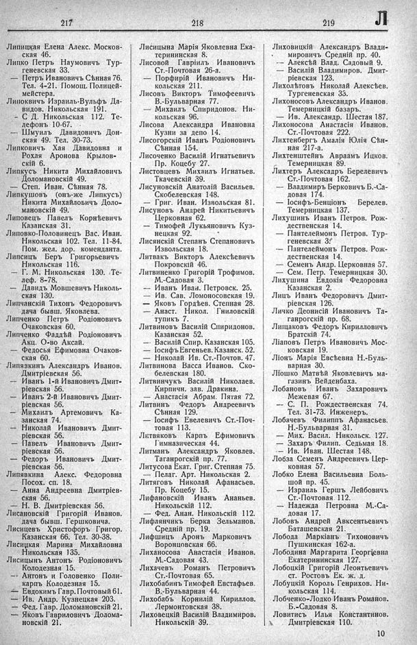

Лист источника 423
Скан

Распознанный текст
217
Липицкая Елена Алекс. Москов-
ская 46.
Липко Петръ Наумовичъ Тур-
геневская 33.
— Петръ Ивановичъ Сѣнная 76.
Тел. 4-21. Помощ. Полицей-
мейстера.
Липоквичъ Израиль-Вульфъ Да-
видов. Никольская 191.
— С Д. Никольская 112. Те-
лефонъ 10-67.
— Шмуилъ Давидовичъ Дон-
ская 49. Тел. 30-73.
Липковичъ Хая Давидовна и
Рохля Аронова Крылов-
скій 6.
Липкусъ Никита Михайловичъ
Доломановскій 49.
— Степ. Иван. Сѣнная 78.
Липкушовъ (онъ-же Липкусъ)
Никита Михайловичъ Доло-
мановскій 49.
Липовецъ Павелъ Корнѣевичъ
Казанская 31.
Липовко-Половинецъ Вас. Иван.
Никольская 102. Тел. 11-84.
Пом. жел. дор. коменданта.
Липсицъ Беръ Григорьевичъ
Никольская 116.
— Г. М. Никольская 130. Те-
леф. 8-78.
— Давидъ Мовшевичъ Николь-
ская 130.
Липчанскій Тихонъ Федоровичъ
дача бывш. Яковлева.
Липченко Петръ Родіоновичъ
Очаковская 60.
Липченко Фаддѣй Родіоновичъ
Акц. О-во Аксай.
— Федосья Ефимовна Очаков-
ская 60.
Липязкинъ Александръ Иванов.
Дмитріевская 56.
— Иванъ 1-й Ивановичъ Дмит-
ріевская 56.
— Иванъ 2-й Ивановичъ Дмит-
ріевская 56.
— Михаилъ Артемовичъ Ка-
занская 74.
— Николай Ивановичъ Дмит-
ріевская 56.
— Павелъ Ивановичъ Дмит-
ріевская 56.
— Федоръ Ивановичъ Дмит-
ріевская 56.
Липявкина Алекс. Федоровна
Посох. сп. 18.
— Анна Андреевна Дмитріев-
ская 56.
— Н. В. Дмитріевская 56.
Лисановскій Григорій Иванов.
дача бывш. Гершковича.
Лисицевъ Христофоръ Григор.
Казанская 66. Тел. 30-38.
Лисицкая Марина Михайловна
Никольская 135.
Лисицынъ Антонъ Родіоновичъ
Колодезная 15.
-- Антонъ и Головенко Поли-
карпъ Колодезная 15.
— Евдокимъ Гавр. Почтовый 61.
— Ив. Андр. Кузнецкая 203.
— Фед. Гавр. Доломановскій 21.
— Яковъ Гавриловичъ Долома-
новскій 21.
218
Лисицына Марія Яковлевна Ека-
терининская 8.
Лисовой Гавріилъ Ивановичъ
Ст.-Почтовая 26-а.
— Порфирій Ивановичъ Ни-
кольская 211.
Лисовъ Викторъ Тимофеевичъ
В.-Бульварная 77.
— Михаилъ Спиридонов. Ни-
кольская 96.
Лисова Александра Ивановна
Кузни за депо 14.
Лисогорскій Иванъ Родіоновичъ
Сѣнная 154.
Лисоченко Василій Игнатьевичъ
Пр. Коцебу 27.
Листовцевъ Михаилъ Игнатьев.
Ткачевскій 39.
Лисуновскій Анатолій Васильев.
Скобелевская 148.
— Григ. Иван. Извольская 81.
Лисуновъ Андрей Никитьевичъ
Церковная 62.
— Тимофей Лукьяновичъ Куз-
нецкая 92.
Лисянскій Степанъ Степановичъ
Извольская 18.
Литвакъ Викторъ Алексѣевичъ
Покровскій 46.
Литвиненко Григорій Трофимов.
М.-Садовая 3.
— Иванъ Иван. Петровск. 25.
— Ив. Сав. Ломоносовская 19.
— Яковъ Гордѣев. Степная 28.
— Анаст. Никол. Гниловскій
тупикъ 7.
Литвиновъ Василій Спиридонов.
Казанская 52.
— Василій Спир. Казанская 105.
— Іосифъ Евгеньев. Казанск. 52.
— Николай Ив. Ст.-Почтов. 47.
Литвинова Васса Иванов. Ско-
белевская 180.
Литвинчукъ Василій Николаев.
Кирпичн. зав. Дракина.
— Анастасія Абрам. Пятая 72.
Литвинъ Федоръ Андреевичъ
Сѣнная 129.
— Іосифъ Евелевичъ Ст.-Поч-
товая 113.
Литвяковъ Карпъ Ефимовичъ
Гимназическая 44.
Литманъ Александръ Яковлев.
Таганрогскій пр. 77.
Литусова Екат. Григ. Степная 75.
— Пелаг. Арт. Никольская 2.
Литяговъ Николай Афанасьев.
Пр. Коцебу 15.
Лифановскій Иванъ Ананьев.
Никольскій 112.
— Фед. Анан. Никольскій 112.
Лифлянчикъ Берка Зельманов.
Средній пр. 19.
Лифшицъ Аронъ Марковичъ
Воронцовская 66.
Лиханосова Анастасія Иванов.
М.-Садовая 43.
Лихачевъ Романъ Петровичъ
Ст.-Почтовая 65.
Лихобабинъ Тимофей Евстафьев.
В.-Бульварная 44.
Лихобабъ Корнилій Кириллов.
Лермонтовская 38.
Лиховецкій Василій Владимиров.
Никольскій 39.
219 Л
Лиховицкій Александръ Влади-
мировичъ Средній пр. 40.
— Алексѣй Влад. Садовый 9.
— Василій Владимиров. Дмит-
ріевская 123.
Лихолѣтовъ Николай Алексѣев.
Тургеневская 33.
Лихоносовъ Александръ Иванов.
Темерницкій базаръ.
— Ив. Александр. Шестая 187.
Лихоносова Анастасія Иванов.
Ст.-Почтовая 222.
Лихтенбергъ Амалія Юлія Сѣн-
ная 217-а.
Лихтенштейнъ Авраамъ Ицков.
Темерницкая 89.
Лихтеръ Александръ Берелевичъ
Ст.-Почтовая 162.
— Владимиръ Берковичъ Б.-Са-
довая 174.
— Іосифъ-Бенціонъ Берелев.
Темерницкая 137.
Лихушинъ Иванъ Петров. Рож-
дественская 14.
— Пантелеймонъ Петров. Тур-
геневская 3.
— Пантелеймонъ Петров. Рож-
дественская 14.
— Семенъ Андр. Церковная 57.
— Сем. Петр. Темерницкая 30.
Лихушина Евдокія Федоровна
Казанская 2.
Лицъ Иванъ Федоровичъ Дмит-
ріевская 126.
Личко Деонисій Ивановичъ Та-
ганрогскій пр. 68.
Лищаковъ Федоръ Кирилловичъ
Братскій 74.
Ліаповъ Петръ Ивановичъ Мос-
ковская 19.
Ліонъ Марія Евсѣевна Н.-Буль-
варная 30.
Ліошко Матвѣй Яковлевичъ ма-
газинъ Вейденбаха.
Лобановъ Иванъ Захаровичъ
Межевая 67.
-- С. П. Рождественская 74.
Тел. 31-73. Инженеръ.
Лобачевъ Филиппъ Афанасьев.
Н.-Бульварная 31.
— Мих. Васил. Никольск. 127.
— Захаръ Филип. Седьмая 18.
-- Ив. Иван. Шестая 148.
Лобза Семенъ Андреевичъ Цер-
ковная 57.
Лобко Елена Васильевна Боль-
шой пр. 45.
— Израиль Гершъ Лейбовичъ
Ст.-Почтовая 112.
— Надежда Петровна М.-Са-
довая 17.
Лобовъ Андрей Авксентьевичъ
Баташевская 21.
Лобода Маркіанъ Тихоновичъ
Пушкинская 162-а.
Лободина Маргарита Георгіевна
Екатерининская 127.
Лобоцкій Григорій Леонтьевичъ
ст. Ростовъ Ек. ж. д.
Лобуцкій Король Генрихов. Ни-
кольская 114.
Лобченко-Лодко Иванъ Романов.
Б.-Садовая 8.
Ловитисъ Илья Константинов.
Дмитріевская 110.
10